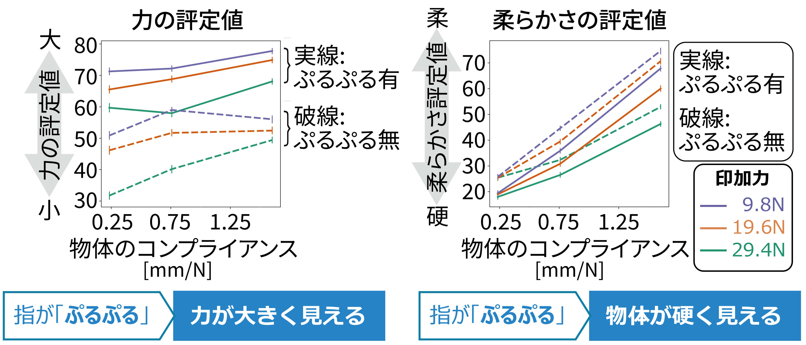

※NTTの河邉さんとの共同研究の成果です。ここに書いてあることには私個人の感想も含まれるかもしれません。
背景
枕やクッションなどを買いに来る買い物客にとっては、その製品の柔らかさは購入の判断をするうえで重要な情報です。しかしオンラインショッピングなど、製品を触ることができない状況では柔らかさを別の形で買い物客に伝える必要が出てきます。1つの典型的な方法は映像を使うことです。 人は、変形する物体を見たときにその物体の柔らかさを判断できます。例えば、以下の2つの映像AとBを比べると多くの人はAの映像に映っている物体を柔らかく感じると思います。しかしなぜAの映像の物体をより柔らかく感じるのでしょうか。これまで、人がどのような視覚情報に基づいて柔らかさの判断を行うかは明らかになっていませんでした。そこで我々の研究では、物体が変形する際に発生する動き情報に焦点をあてて、柔らかさの判断との関係を明らかにしました。

図1:AとBに映る物体のどちらが柔らかいかな？
研究1: 押し込まれる物体の動き
押し込まれる物体の動きに着目した、1つ目の研究を紹介します。この実験では参加者は映像中の物体の柔らかさを100段階で評定します。視覚刺激の条件として、押込量・押込速度・物体コンプライアンス（物体の柔らかさの物理量でばね定数の逆数です。コンプライアンスが大きいほど柔らかいです）を操作しました。下の図2中の映像は、参加者が見た映像の一部を抜粋したものです。どの物体が柔らかく見えるでしょうか。

図2:実験で観察者が見た、物体が押し込まれる映像。押込量・押込速度・コンプライアンスを操作。
下の図3が参加者による柔らかさ評定結果です。押込量と押込速度によって、柔らかさ判断が変動することを明らかにしました。押込量や押込速度が大きくなればなるほど、対象の物体を柔らかく感じる傾向がありました。

図3:実験で観察者が見た、物体が押し込まれる映像。押込量・押込速度・コンプライアンスを操作。
もう一つ明らかになったこととして、押込量・押込速度だけでは柔らかさ判断の変動を説明できないこともわかりました。図3中の3つのグラフは異なるコンプライアンスを持つ物体の結果をそれぞれ示しているのですが、もし押込量・押込速度だけで柔らかさ判断が決まるのであれば、3つのグラフは完全に同じになるはずです。しかし、3つのグラフ中の柔らかさの変動パターンは異なります。例えば柔らかい物体では、柔らかさ評定値の変動レンジが大きいです。これはすなわち、物体のコンプライアンスによっても柔らかさ判断が変動したということです。物体のコンプライアンスの情報は映像中に「0.2 mm/N」などと書いてないため、参加者は直接その情報を得ることはできません。ではなぜコンプライアンスによって評定値が変動したのでしょうか。 実は柔らかい物体と硬い物体では、押し込まれた点における量や速度が同じでも、そこから離れた点における変形の仕方が異なります。図4Aでは押込量や押込速度は同一な、硬い物体と柔らかい物体の映像を載せていますが、押し込まれた点以外の変形が異なっていることが分かると思います。この点を加味して、全体的な変形量と全体的な変形速度の指標を画像統計量を使ってつくり、これらの指標で参加者の柔らかさ評定値の結果を解析すると、とてもよく柔らかさ評定値の変動を説明できることが分かりました。つまり、人は押し込む点の動きの量と速度というよりは、全体的な変形量と速度に基づき柔らかさを判断している、ということになります。

図4A:硬いと柔らかい物体だと押し込まれた点以外の変形の仕方が変わる。図4B:全体的な変形量と変形速度で人の柔らかさ判断をうまく説明できる。
なお表面のテクスチャによる影響ではないか？という可能性もあるかもしれません。そこで表面テクスチャを塗りつぶした映像で同様の実験を行ったところ、結果は同じ傾向でした。また塗りつぶしの有無の効果を解析したところ、有意な効果は見つかりませんでした。すなわち表面のテクスチャによる影響は小さいと言えそうです。 詳細は文献[1]をご覧ください。
研究2: 押し込む指のぷるぷるした動き
次に、押し込む指のぷるぷるした動きに着目した、2つ目の研究を紹介します。柔らかさの判断には、押し込む「力」の大きさ判断が関係するはずです。人にはその「力」は見えないですが、視覚情報に基づいて力の大きさを判断する可能性があります。例えば腕立て伏せをして「ぷるぷる」した動きが見えると、それは力を入れている証拠ですよね。
図5:ぷるぷるした動き
仮説として、物体を押す指が「ぷるぷる」すると大きな力が加わっていると錯覚し、その結果押し込んでいる物体の柔らかさ判断に影響するのではないか、と考えました。実験のタスクとしては、観察者は力の大きさと柔らかさを100段階で評定しました。実験条件として、指のぷるぷる演技の有無、押込力、物体コンプライアンスを操作しました。図5に「ぷるぷる演技」無しと「ぷるぷる演技」有りの映像を載せています。どちらも物体のコンプライアンスや押込力は実は同じです。

図6:ぷるぷる演技の有無による映像の違い
結果として他者の指が「ぷるぷる」しているときには、力を大きく・物体を硬く判断しました。同じ変形量の場合に、指が「ぷるぷる」していて大きな力をかけているということは、押している対象は硬いはずだ、という判断がはたらいたと解釈できます。詳細なレポートは論文[2]をご覧ください。
図7: ぷるぷるすると力を大きく、物体を硬く判断する
まとめ
柔らかさ判断に対して、変形量や変形速度に対応する動きの統計量と、ゆびのぷるぷるした動きに基づく力の推定が寄与することがわかりました。この研究の先の未来像として、1.商品の質感をオンラインでリアルに伝える提示技術の実現や2.バーチャルな他者の身体状況を正確に伝える提示技術への展開を考えています。
- Ujitoko, Y., & Kawabe, T. (2022). Perceptual judgments for the softness of materials under indentation. Scientific reports, 12(1), 1761.
- Ujitoko, Y., & Kawabe, T. (2022). Visual estimation of the force applied by another person. Scientific reports, 12(1), 6216.